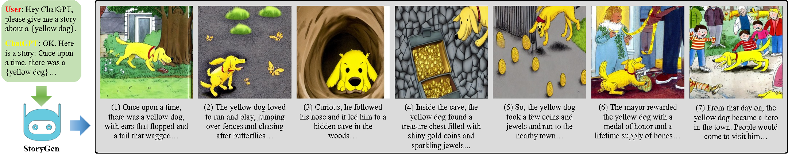
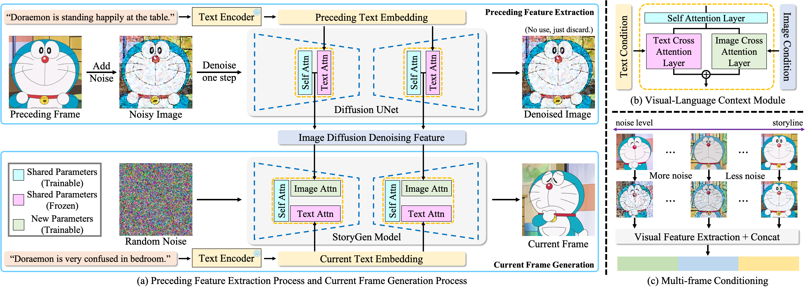
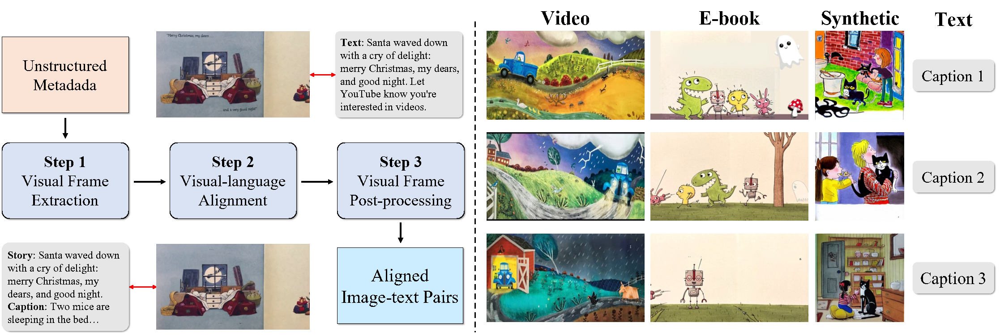
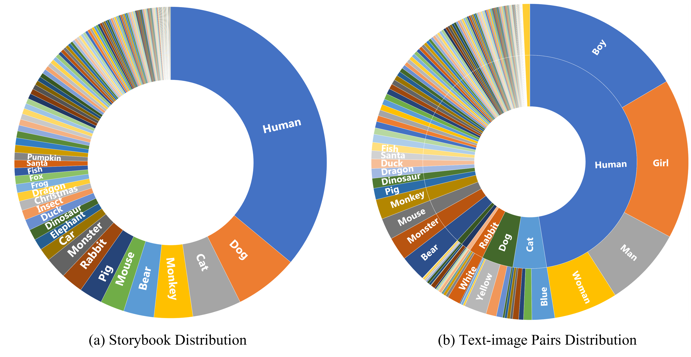
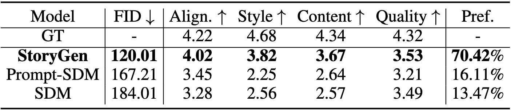
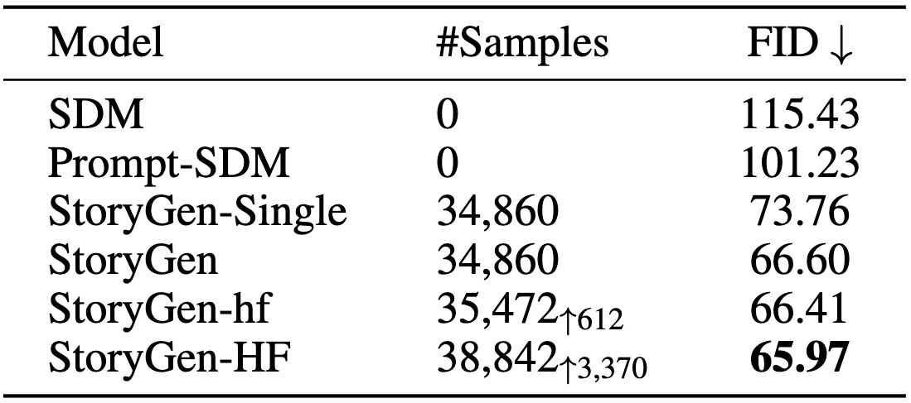
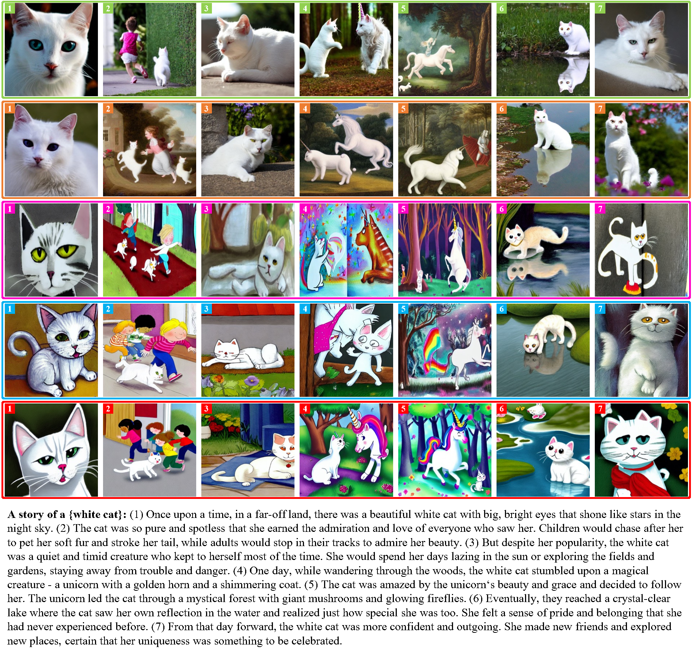

StoryGen
Intelligent Grimm - Open-ended Visual Storytelling via Latent Diffusion Models
|
|
1CMIC, Shanghai Jiao Tong University
|
2Meituan Inc., China
|
3Shanghai AI Lab
|

An illustration of open-ended visual storytelling.
In practice, one user can prompt a large language model, for example, ChatGPT, to generate a unique and engaging story,
that is then fed into our proposed StoryGen model,
to generate a sequence of images. We recommend the reader to zoom in and read the story.
Abstract
Generative models have recently exhibited exceptional capabilities in various scenarios, for example, image generation based on text description.
In this work, we focus on the task of generating a series of coherent image sequence based on a given storyline, denoted as open-ended visual storytelling.
We make the following three contributions:
(i) to fulfill the task of visual storytelling, we introduce two modules into a pre-trained stable diffusion model, and construct an auto-regressive image generator,
termed as StoryGen, that enables to generate the current frame by conditioning on both a text prompt and a preceding frame;
(ii) to train our proposed model, we collect paired image and text samples by sourcing from various online sources, such as videos, E-books, and establish a data processing pipeline for constructing a diverse dataset, named StorySalon, with a far larger vocabulary than existing animation-specific datasets;
(iii) we adopt a three-stage curriculum training strategy, that enables style transfer, visual context conditioning, and human feedback alignment, respectively. Quantitative experiments and human evaluation have validated the superiority of our proposed model, in terms of image quality, style consistency, content consistency, and visual-language alignment. We will make the code, model, and dataset publicly available to the research community.
Architecture

Architecture Overview.
The left figure illustrates the complete procedure of visual storytelling.
Our StoryGen model utilizes contextual information from the previous frame and the text description at current step, to generate an image.
The right figure displays the structure of our proposed modules,
(i) style transfer module that is inserted into the text-conditioning module, with a LoRA-like architecture;
(ii) visual context module that enables the model to also condition on the features from the preceding image for generation.
StorySalon Dataset Pipeline

Dataset Pipeline Overview.
The left figure provides an overview of the complete dataset collection pipeline.
Unstructured metadata sourced from the Internet undergoes a series of steps including visual frame extraction,
visual-language alignment and visual frame post-processing, resulting in properly aligned image-text pairs.
The right figure displays several examples of video data, E-book data,
and synthetic samples from our StorySalon dataset. The accompanying texts represent their corresponding textual contents, respectively.

Analysis on Dataset Contents.
Distribution of storybooks and text-image pairs classified by the main character in our collected StorySalon dataset.
The basic version of our dataset (without synthetic data) comprises a total of 2,184 storybooks and 34,860 text-image pairs.
Specifically, the video component consists of 1,286 storybooks and 21,778 text-image pairs, whereas the E-book component comprises 898 storybooks and 13,082 text-image pairs.
Our findings reveal a total of 178 unique categories of main entities.
Results
Quantitative Results

Comparison result of FID and human evaluation.
GT stands for the ground truth from the training set.
SDM denotes Stable Diffusion and Prompt-SDM denotes SDM with cartoon-style-directed prompts.
Align. and Pref. represent the abbreviations of Text-image alignment and Preference respectively.
Qualitative Results

The images in green, orange and blue boxes are generated by
SDM, Prompt-SDM and StoryGen respectively.
Our results have superior style and content consistency, text-image alignment, and image quality.
Human Feedback

We use the model (trained after two stages) to generate a set of new storybooks, and incorporate human feedback into the fine-tuning process.
Following a rigorous manual review, we carefully select the best pieces, and add them into the training dataset.
This allows us to continually improve the quality of our model and ensure that it produces engaging, yet educational storybooks, that align with human's preference.

The images in green, orange, pink, blue
and red boxes are generated by
SDM, Prompt-SDM, StoryGen-Single StoryGen
and StoryGen-HF respectively.
The results of our proposed models have exhibited superior style and content consistency, text-image alignment, and image quality.
Visual StoryTelling
Acknowledgements
Based on a template by Phillip Isola and Richard Zhang.